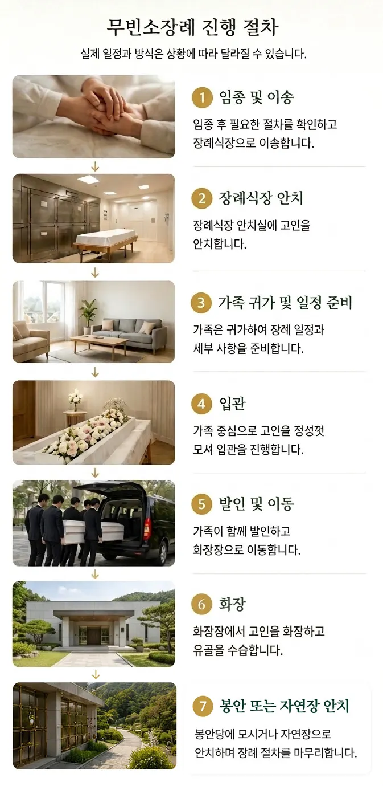

무빈소 장례
빈소를 차리지 않고, 입관·발인 등 필요한 장례절차를 중심으로 진행하여 접객의 부담을 줄이고 가족의 상황과 뜻에 맞게 장례를 준비할 수 있습니다.
일반 장례 vs 무빈소 장례
일반장례와 같은 점
01장례식장을 이용한다
02입관·발인 등의 장례절차를 진행한다
03사망 후 24시간 경과해야 화장 가능하다
일반장례와 다른 점
01빈소를 차리지 않는다
02조문객 접객을 하지 않는다
03화장 일정이 맞으면 2일장도 가능하다

무빈소장례는 비용 구조도 다릅니다
무빈소장례는 빈소와 조문객 접객이 없고, 장례 진행에 필요한 인력과 서비스도 일반장례보다 간소합니다. 그만큼 시설사용료·음식비·장례서비스 비용이 줄어들어, 장례식장 비용 기준으로 일반장례의 약 20~30% 수준에서 장례를 치를 수 있습니다.
일반장례 예시주요 비용
장례식장 빈소 등 시설사용료300만원
음식비400만원
상조서비스 비용500만원
합계1,200만원
무빈소장례 예시주요 비용
장례식장 시설사용료100만원
장례서비스 비용150만원
합계250만원
일반장례 대비 20~30% 수준
※ 위 금액은 주요 장례비용을 비교하기 위한 보편적인 예시입니다. 실제 비용은 장례식장, 이용 시설, 음식 주문량, 장례서비스 구성 등에 따라 달라질 수 있습니다.
무빈소장례에서 가족이 결정할 사항
01이용할 장례식장
02입관에 참석할 가족
03무빈소장례 진행에 따른 부고 알림 내용
04화장장과 장지
05무빈소 장례서비스 구성
빈소 접객 없어도, 추모의 시간은 따로 마련할 수 있습니다.
안치 후 조문객을 받지 않는 대신, 가족과 가까운 친지들이 함께 고인을 추모하는 별도의 추모식을 진행할 수 있습니다.
안치 후 조문객을 받지 않는 대신, 가족과 가까운 친지들이 함께 고인을 추모하는 별도의 추모식을 진행할 수 있습니다.